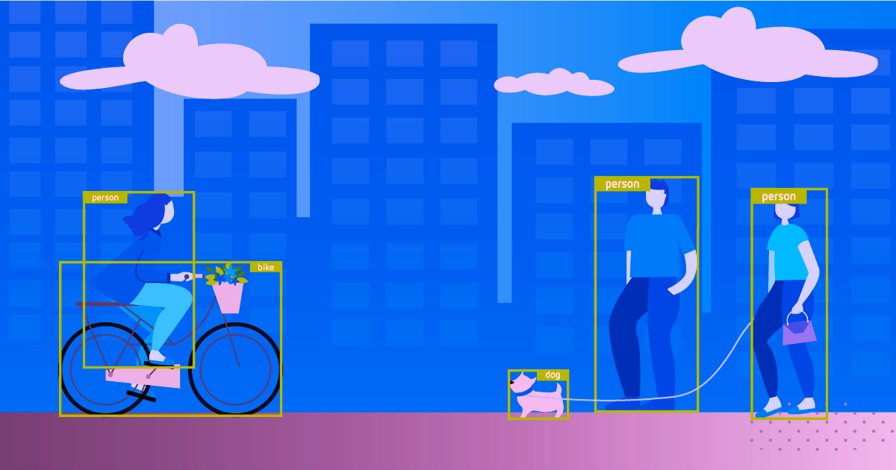

AI Features: This model aims to localize and identify multiple objects in a single image. This model is a TensorFlow.js port of the COCO-SSD model. This model detects objects defined in the COCO dataset, which is a large-scale object detection, segmentation, and captioning dataset. The model is capable of detecting 80 classes of objects. (SSD stands for Single Shot MultiBox Detection). This TensorFlow.js model does not require you to know about machine learning. It can take input as any browser-based image elements and returns an array of bounding boxes with class name and confidence level. Learn more
How to Use: Upload a video file, the video will be processed and detected objects will be highlighted with labels and bounding boxes.
Drag and drop a video file here or click to upload
Practical Applications: It's essential for various applications such as video analysis, security footage review and more.